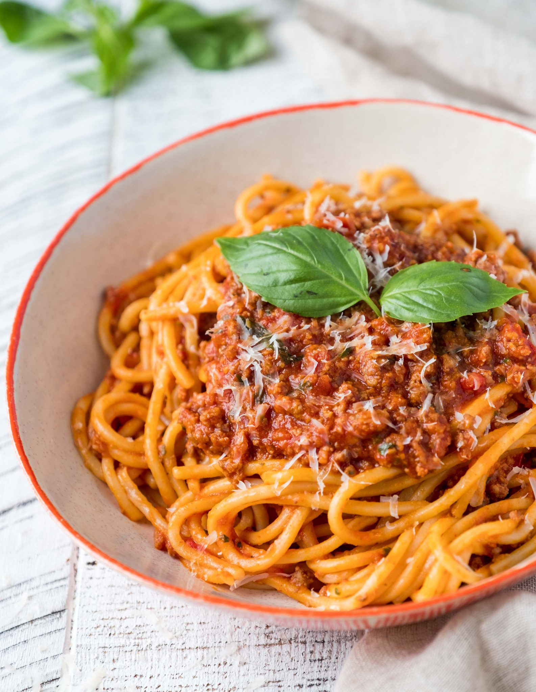

Spaghetti Bolognese

Description
Pasta with bolognese sauce, which contains mince, tomatos, pepper and onion.
Ingredients
- Mince (500g)
- Red pepper (1)
- Onion (1)
- Garlic (1 clove)
- Chopped tomatos (1 tin)
- Tomato purèe (small spoonful)
- Salt and pepper (seasoning)
- Spaghetti
Steps
- Heat a frying pan with olive oil at medium. At the same time, slice the pepper and the onion.
- When the pan has heated up, put the onion and pepper in with the garlic and wait for a few minutes until soft.
- Raise the heat slightly, put in the mince and cook for roughly 10 minutes, until it is brown all over.
- Add the tin of tomatos and the purèe and mix together.
- Season the bolognese, wait for it to boil and then lower the heat and let it simmer for 20 minutes. At the same time, boil spaghetti in a saucepan and drain when done. Serve with the bolognese.